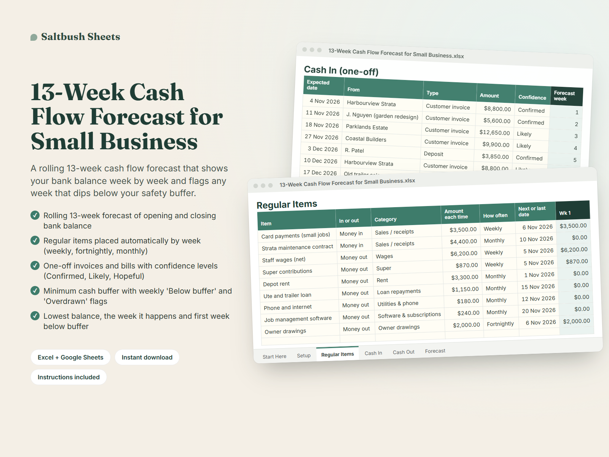
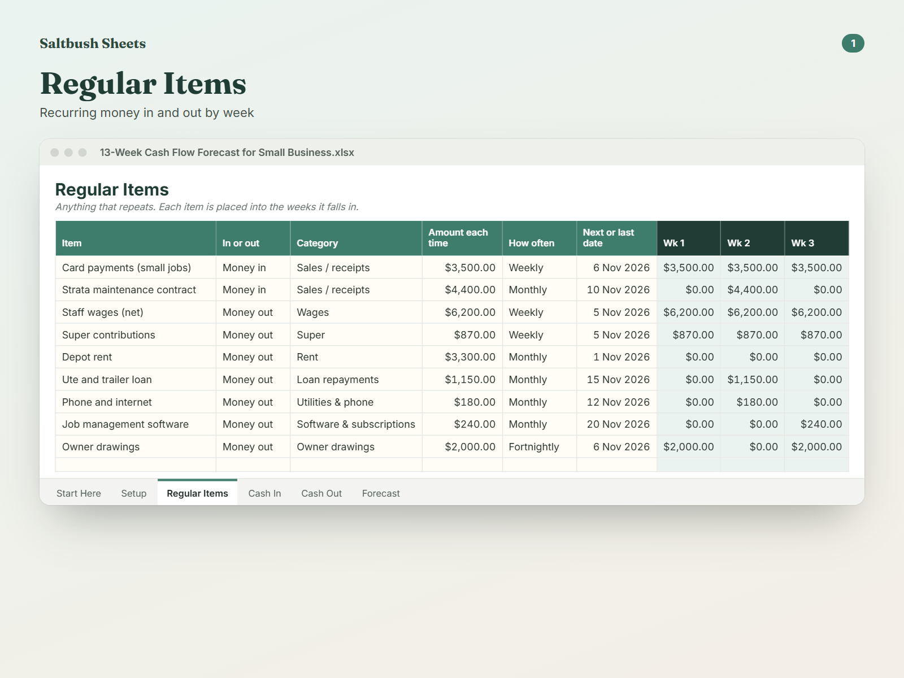
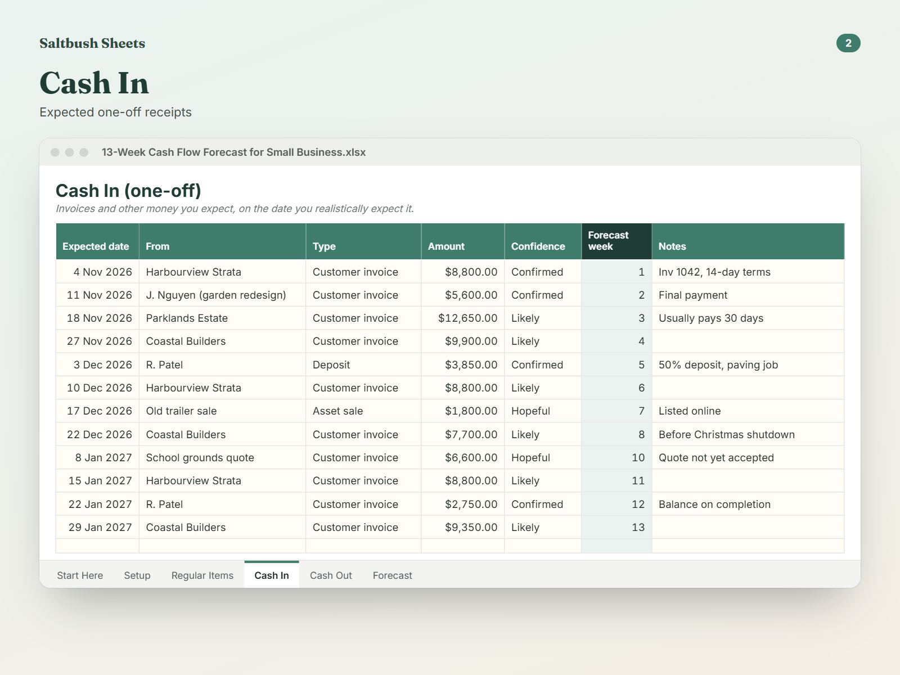
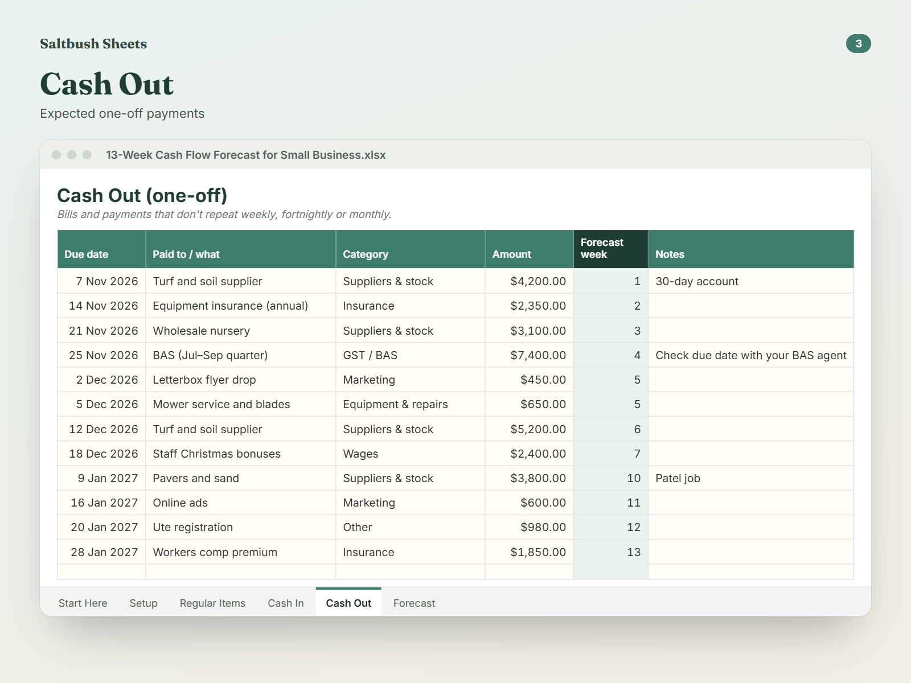

A rolling 13-week cash flow forecast that shows your bank balance week by week and flags any week that dips below your safety buffer.
Launch week: 20% off with code LAUNCH20 at checkout, until Mon 2 Nov, 11:59pm Perth time.
The example data is a small landscaping business with weekly wages and super, monthly rent and loan repayments, fortnightly owner drawings, a BAS payment and invoices at different confidence levels, so you can see how each one flows into the weekly balance.
Profit on paper doesn't pay wages. What matters week to week is whether there's enough in the bank when rent, super, suppliers and the BAS all land. A 13-week cash flow forecast is the tool many accountants and bookkeepers use to answer that, and this template makes it simple to keep one.
Enter your regular items once (weekly wages, fortnightly drawings, monthly rent, loan repayments, retainer income) and the sheet places each one in the right weeks automatically. Add one-off invoices and bills with their dates, and mark expected receipts as Confirmed, Likely or Hopeful so you can choose a cautious or optimistic view.
The Forecast sheet shows opening balance, money in, money out and closing balance for each of the next 13 weeks. It flags weeks that fall below your minimum buffer or go overdrawn, shows your lowest point and when it hits, and breaks cash out down by category.
Roll it forward each week by changing the start date and updating your bank balance. Includes example data for a small landscaping business so you can see how it works before clearing it and adding your own.
A$19 once. No subscription and no bank or accounting software login. Works in Excel or the free Google Sheets, instant download, prices in AUD.
Digital download only: nothing is posted to you. Example data is included and easy to clear.
No. You type in your bank balance, regular items and expected invoices and bills. It works alongside any accounting software.
It's about one quarter: far enough ahead to see BAS, insurance and seasonal dips coming, close enough to plan week by week.
Each week, change the start date to the new Monday and update your opening bank balance. Items dated before week 1 are marked 'Outside' and stop counting.
Yes. Make a copy per client. It's a planning tool, not financial or tax advice.
Yes. Categories are dropdown lists you can edit. If you rename them, update the matching names in the Forecast category list too.
Because it's an instant digital download, there are no change-of-mind refunds. If the file is faulty or not as described, contact us and we'll fix it, replace it or refund you.
Start this Monday, before the next BAS or quiet season.